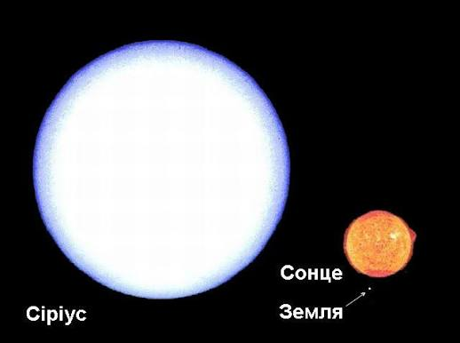
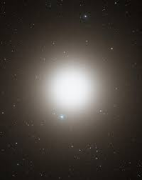
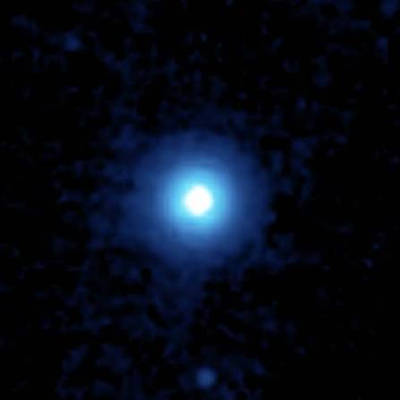
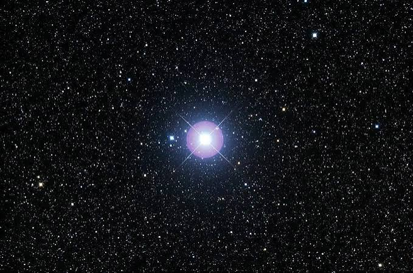
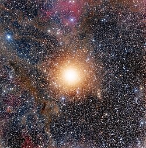

Дивлячись на нічне небо, ми бачимо тисячі світлих крапок, але не багато з них сяють настільки яскраво, що їх можна побачити в освітлених вулицях. На цьому сайті можна побачити найяскравіші зорі, які видно із Землі.
Про найяскравіші зорі
Що таке зоряна величина
Яскравість зірок астрономи вимірюють за допомогою видимої зоряної величини - чим менше це число, тим яскравіша зірка.
Топ найяскравіших зірок
Найяскравішою зіркою нічного неба (не рахуючи Сонця) є Сіріус - вона розташована у сузір'ї Великого Пса. Друге місце займає Канопус, а третє - Альфа Центавра, найближча до нас зоряна система.

Список найяскравіших зірок
- Сіріус (сузір'я Великий Пес)
- Канопус (сузір'я Кіль)
- Альфа Центавра (сузір'я Центавр)
- Арктур (сузір'я Волопас)
- Вега (сузір'я Ліра)
Спектральні класи зірок
- O (Синій)
- B (Біло-блакитний)
- A (Від біло-блакитного до білого)
- F (Білий)
- G (Жовто-білий)
- K (Жовто-помаранчевий)
- M (Помаранчево-червоний)
Порівняльна таблиця
| № | Зірка | Видима зоряна величина | Відстань (св. роки) | Спектральний клас |
|---|---|---|---|---|
| 1 | Сіріус | -1,46 | 8,6 | A |
| 2 | Канопус | -0,74 | 310 | A |
| 3 | Альфа Центавра | -0,27 | 4,34 | G |
| 4 | Арктур | -0,05 | 36,7 | K |
| 5 | Вега | 0,03 | 25 | A |
| 6 | Капелла | 0,08 | 42,2 | K |
| 7 | Рігель | 0,13 | 860 | B |
| 8 | Проціон | 0,38 | 11,4 | F |
| 9 | Ахернар | 0,46 | 139 | B |
| 10 | Бетельгейзе | 0,50 | 550 | M |
Детальніше про список можна почитати на Вікіпедії
Галерея зірок



